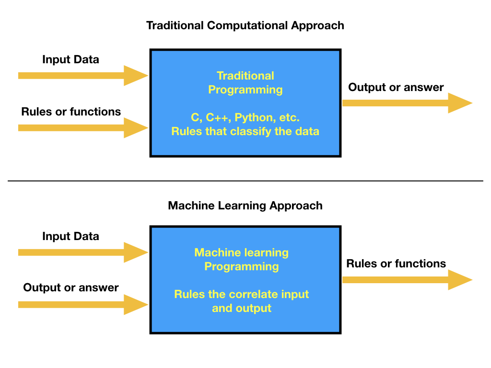
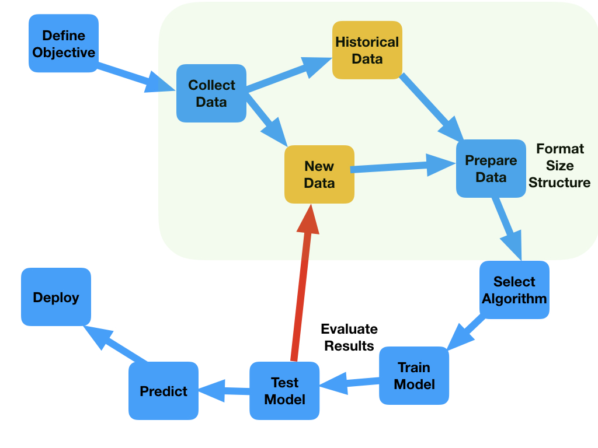

Our experience in solving a problem by using a computer always involve the idea that we have access to the data at the same time that you can define some specific rules that can be used to map an asswer. From a programming perspective, you need to create a series of rules that guarantee that given the input you get the correct output. In most cases, the input data is very diverse and the number of rules that needs to be applied to input sequences increases, making the programming scheme to fail. A different approach is based on allowing the machine to learn, which means that experience will be used to make accurate predictions.

In this new approach of solving problems in the computer, then our concern is to be able to create a model that will take the input and output and, by training a model, meaning allowing the computer to learn and extract the corrrelations between the provided data, we can find the model parameters that represent the rules and make a prediction (meaning that we can infer the rules in this learning process). The model parameters can be found by using past information, where the input and outpuf is completely known. Here it is important to stress that the quality and size of the available data is the key to have a very good performance of the machine learning algorithm. While in the classical approach, we use a computer language, we code the program with the rules that provide the right answer, we then compile the program and use it to predict an answer based on new data. This process is quie succesful when the input data is quite uniform and there is not large data variability. In the case of the machine learning, our purpose is to optimize parameters within a predefined model on data that can be quite disperse and very inhomogenenous. In reality, the methodology goes as follows:
